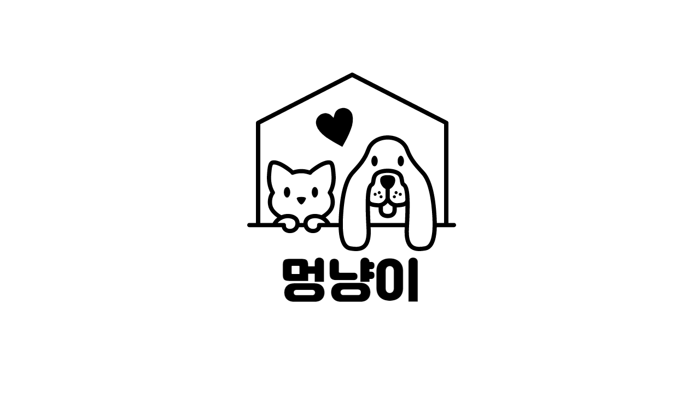
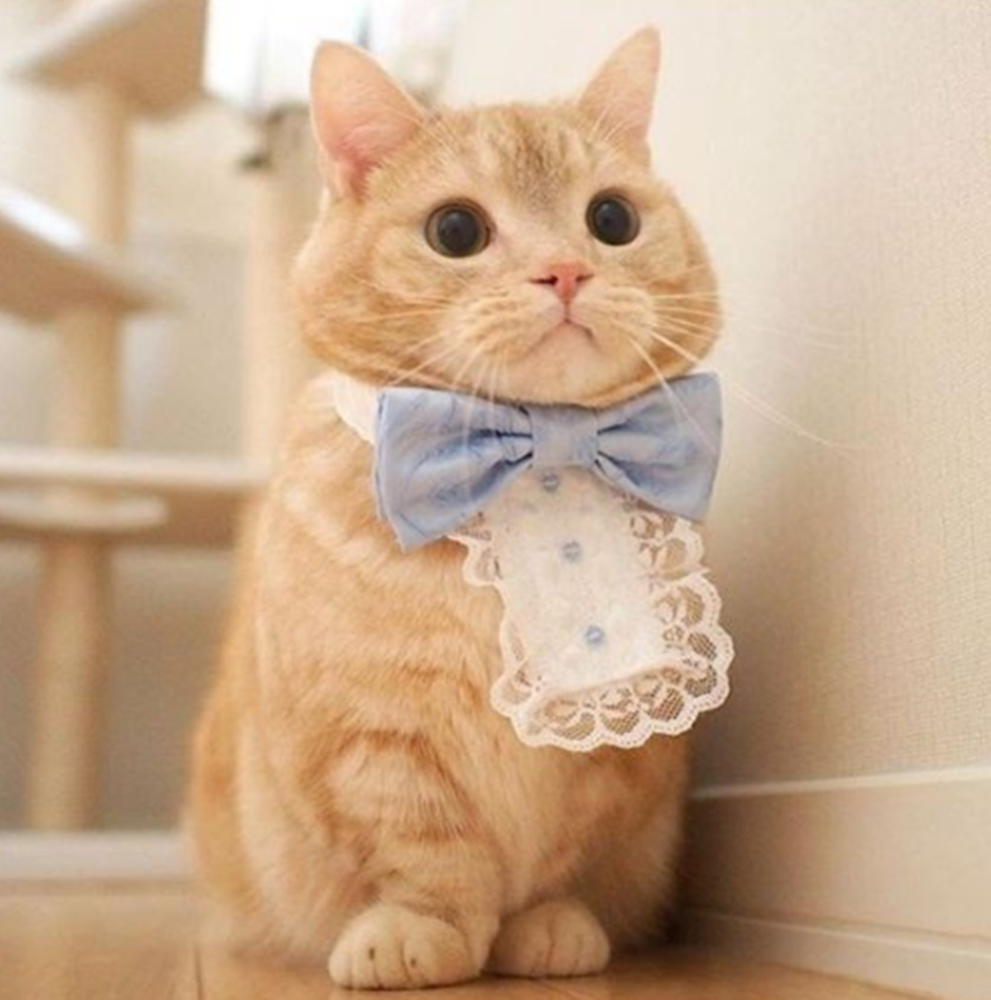

로그인
회원가입
강아지
건강
행동
훈련
품종
고양이
건강
행동
훈련
품종
지도
동물병원
공공장소
산책로
커뮤니티
샵 추천
고양이 훈련영상

고양이 훈련영상 입니다.
고양이의 기본 훈련 영상을 알려줍니다
06:27
앉아
고양이가 앉아를 알아듣습니다
02:22
기다려
고양이가 기다려를 알아듣습니다
02:16
엎드려
고양이가 엎드려를 알아듣습니다
02:21
손
고양이가 주인에게 손을 줍니다
05:32
짖기
고양이가 짖어 하면 짖습니다